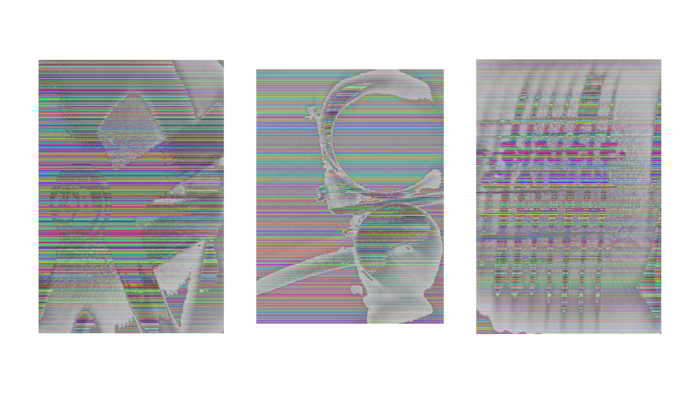

2022-x-02
A dithering algorithm allows us to reduce the number of colors on an image without loosing much information. You simply assign the nearest possible color to each pixel. The secret is to save the error (the difference between the original color and the assigned one) to take it into account in the future. But I am not interested in reduce colors, quite the opposite.

Film photography
I decided to paint some of my photographs. I choose some of the analogue monochrome ones. For each row of pixels I let the computer to select to which color channel apply the dithering algorithm. In a grayscale image all rgb pixels are something like (n,n,n), where 0 ≤ n ≤ 255. If you change one of the numbers, a color appear immediately.

